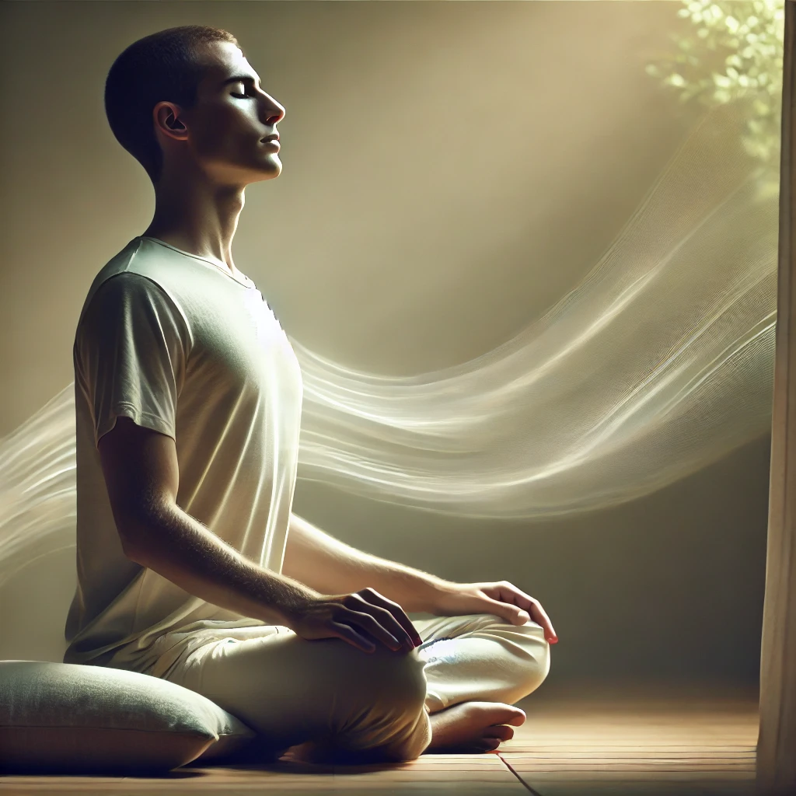
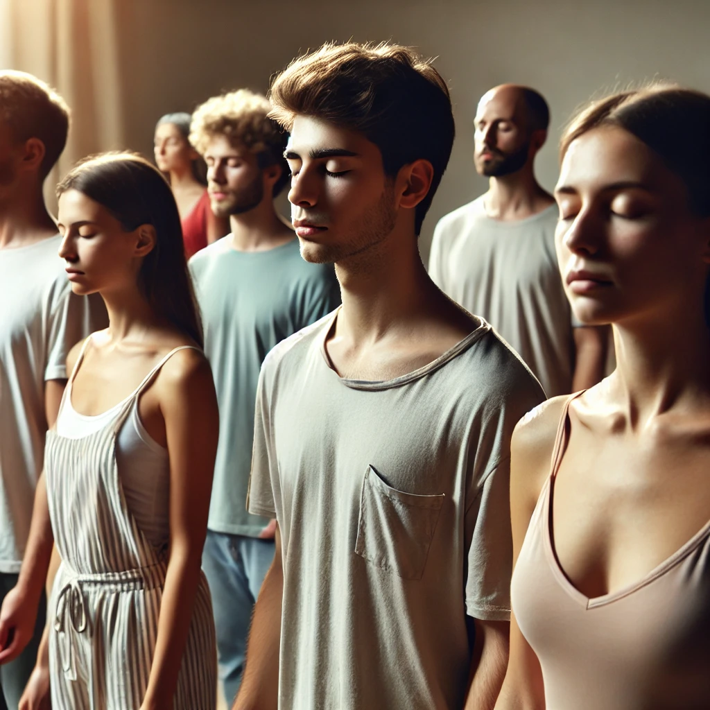

Meditação Gourishankar
A Meditação Gourishankar é uma técnica poderosa de centramento que trabalha no terceiro olho. Esta meditação consiste em quatro estágios, cada um com duração de 15 minutos. Os dois primeiros estágios preparam o meditador para a experiência espontânea do terceiro estágio. Diz-se que, se a respiração for feita corretamente no primeiro estágio, o meditador sentirá como se estivesse no Gourishankar (Monte Everest).
Para praticar esta meditação: Baixe o áudio e ouça-o enquanto segue os passos abaixo.
1. Primeiro Estágio: 15 Minutos
Sente-se com os olhos fechados. Inspire profundamente pelo nariz, enchendo os pulmões, e segure a respiração o máximo de tempo possível. Depois, expire suavemente pela boca, mantendo os pulmões vazios o maior tempo possível. Repita este ciclo.
2. Segundo Estágio: 15 Minutos
Retorne à respiração normal. Mantendo o olhar suave, observe uma chama ou uma luz azul intermitente (estroboscópica). Permaneça imóvel durante este processo.
Nota 1: Aqueles com um distúrbio neurológico, como epilepsia, nunca devem usar uma luz estroboscópica para esta meditação. Em vez disso, eles podem fazer o segundo estágio com uma venda nos olhos.
Nota 2: A música no segundo estágio desta meditação tem um ritmo que é sete vezes a frequência cardíaca normal. Se possível, a luz intermitente deve ser sincronizada com uma frequência de 490 por minuto. Se uma luz estroboscópica não estiver disponível, você pode usar uma vela.
3. Terceiro Estágio: 15 Minutos
Com os olhos fechados, fique de pé e permita que seu corpo fique solto e receptivo. As energias sutis dentro de você moverão seu corpo fora do controle normal. Não se mova intencionalmente; deixe o movimento acontecer por conta própria.
4. Quarto Estágio: 15 Minutos
Com os olhos fechados, deite-se e permaneça imóvel. Entre em um estado de silêncio e permita que o testemunho aconteça naturalmente.